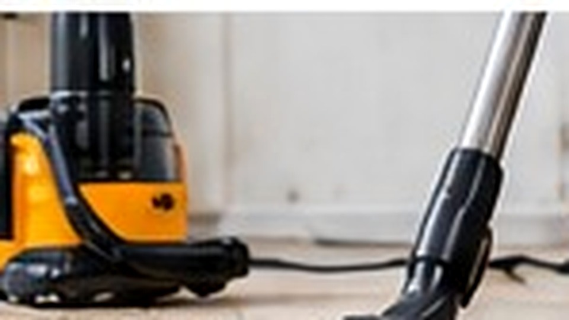
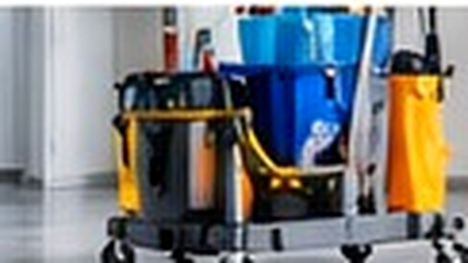
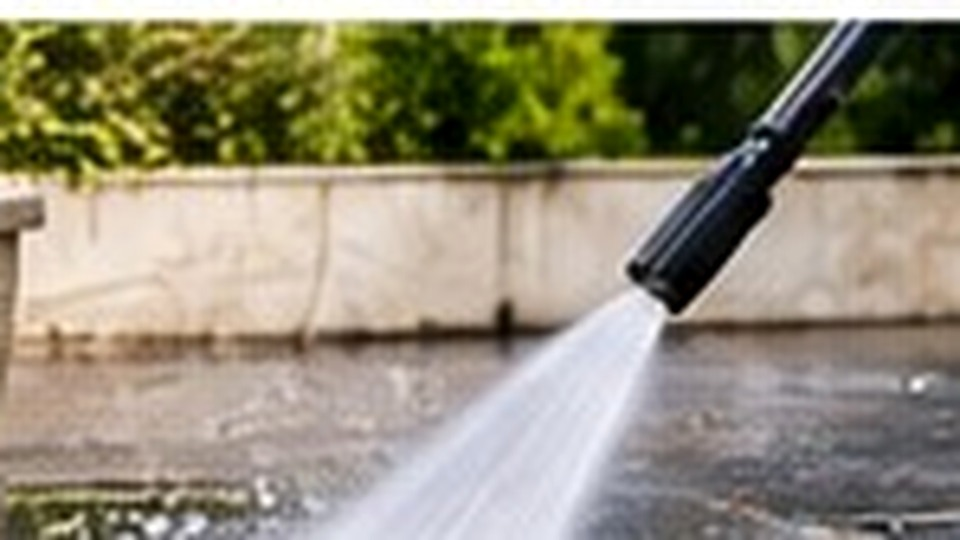
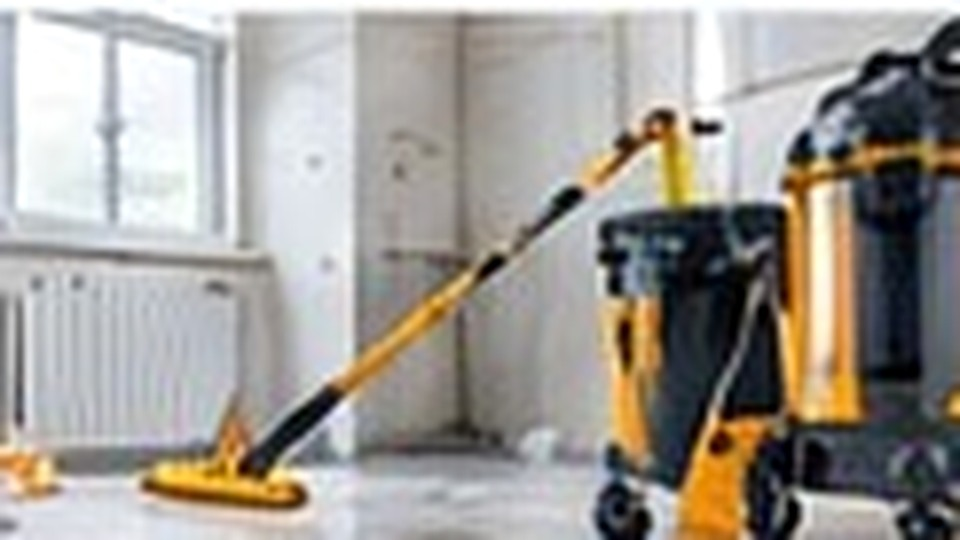
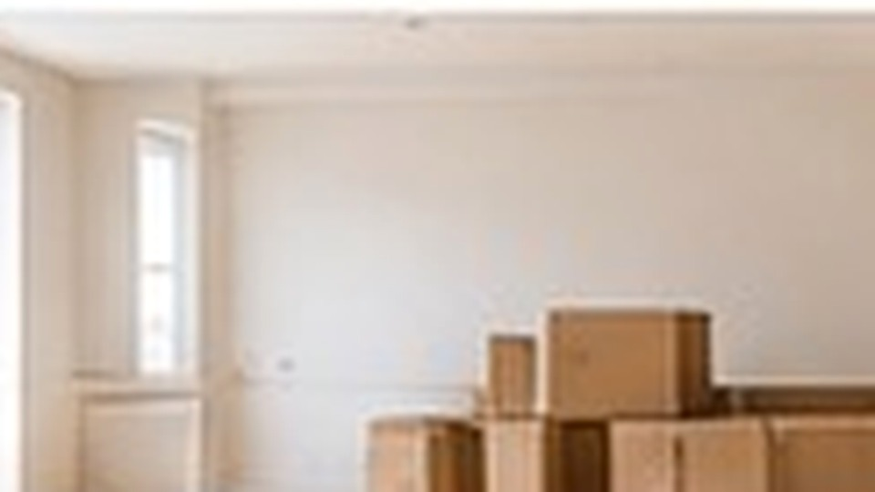
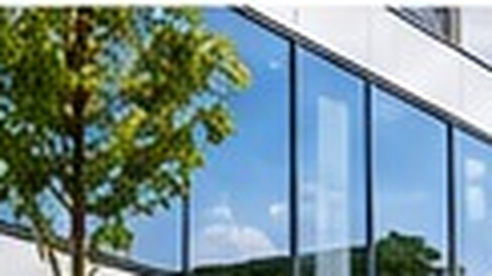

🧹
Entretien régulier
Des locaux propres toute l’année
Bureaux, commerces et parties communes : une prestation régulière adaptée à votre rythme.
Demander un devis →ENTREPRISE DE NETTOYAGE • NANTES & ENVIRONS
SAM Service Nettoyage prend soin de vos locaux, logements et extérieurs avec des prestations ponctuelles ou régulières, adaptées à vos besoins.
NOS PRESTATIONS
De l’entretien courant aux remises en état plus spécifiques, nous construisons la prestation selon votre besoin.

Bureaux, commerces et parties communes : une prestation régulière adaptée à votre rythme.
Demander un devis →
Remise en état, événement, logement ou locaux professionnels : nous adaptons l’intervention.
Demander un devis →Fenêtres, baies vitrées, vérandas et surfaces vitrées. Tarifs avantageux : demandez simplement votre devis.
Demander un devis →
Terrasses, allées, cours, murets et surfaces compatibles, après vérification du support.
Demander un devis →
Nettoyage adapté aux panneaux photovoltaïques, selon l’accessibilité et les conditions de sécurité.
Demander un devis →
Dépoussiérage, sols, traces de chantier, vitres accessibles et remise en état avant livraison.
Demander un devis →
Nettoyage complet avant emménagement ou après déménagement, personnalisé selon l’état des lieux.
Demander un devis →
Terrasses, balcons, allées, vitres extérieures accessibles et entretien ponctuel.
Demander un devis →EN SAVOIR PLUS
VITRES
Fenêtres, baies vitrées, vérandas, miroirs et surfaces vitrées. Le tarif dépend du nombre de vitres, de leurs dimensions, de l’accessibilité et de la fréquence.
Pas de grille compliquée : demandez simplement votre devis gratuit.
Obtenir mon devis vitresEXTÉRIEURS
Nous proposons le nettoyage haute pression des surfaces compatibles et l’entretien des panneaux solaires, après vérification des conditions d’accès et de sécurité.
Parler de mon besoin →SAM SERVICE NETTOYAGE
Nous accompagnons particuliers et professionnels pour l’entretien courant, les besoins ponctuels et les remises en état. Notre objectif : une prestation claire, sérieuse et adaptée à vos locaux, votre logement ou vos extérieurs.
PROXIMITÉ
Notre entreprise est située au 69 bis rue du Bêle, 44300 Nantes. Nous intervenons à Nantes et dans les environs selon la nature de la prestation.
DEVIS GRATUIT
Nous revenons vers vous avec une proposition adaptée à votre besoin.